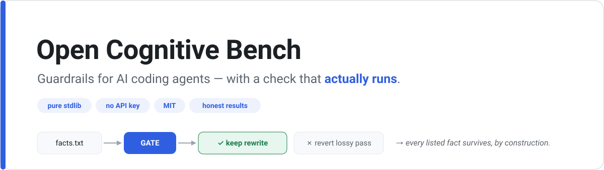

Guardrails for AI coding agents — shipped with a falsifiable benchmark, and an honest result.
This project set out to test a simple claim: do "guardrail" prompts actually stop an AI coding agent from breaking your code? Measured rigorously, the answer was mostly no — so the project leads instead with the one piece that does hold up: a small, executable tool, plus the honest methodology and negative results. Two things here are usable today.
The most common fix — and why it can't guarantee.
Telling the AI "don't drop this" in CLAUDE.md, memory, or a system prompt is a
prompt: it biases the model but can't promise. It can be ignored, forgotten when the
context fills up, or argued away — and those files quietly drift themselves. A gate is different in
kind: it doesn't ask the model to behave, it inspects the result and rejects it if a
listed fact is gone. So CLAUDE.md reduces how often something gets dropped; a gate
run in CI guarantees the drop can't land — for the facts you listed, as a present-string check, in
a spot that can't be skipped. Use both.
Pick the one that matches your problem.
When you re-run a document through an LLM (condense / reword / refactor) and it silently drops a fact, a constraint, or the why. Pure Python, no dependencies, no API key.
# list the facts that MUST survive, then gate every rewrite: printf '90 days\nPRIV-88\nGDPR Art. 17\n' > facts.txt python drift-guard/gate.py --facts facts.txt \ --baseline doc.md --candidate rewritten.md --apply doc.md # ACCEPT only if every fact survived, else keep the old file. That's the guarantee.
See it on a real example (no setup):
python drift-guard/example/multipass_demo.py — one doc, 6 passes: ungated drifts 5→2 facts,
gated holds 5/5. → drift-guard guide
When your AI coding assistant "simplifies" or deletes legacy code that turns out to be load-bearing. It makes the agent investigate why the code exists (git history, callers, tests) before changing it.
# Claude Code: /plugin marketplace add Vince427/open-cognitive-bench /plugin install chestertons-shield@open-cognitive-bench # Any other tool: copy skills/chestertons-shield/SKILL.md into your agent's instructions.
Negative results, published on purpose.
There are two different things here, and they are not equally strong — so don't read "the benchmark was negative" as "nothing works":
✅ The tool (drift-guard) works. You list the facts that must not disappear; it checks every AI rewrite and rejects any version that dropped one. That's a real guarantee — a check that actually runs, not a hope. (You enforce it in CI, a git hook, the auto-rewrite loop, or as an MCP tool the AI calls.)
🟡 The skill (telling the AI "be careful") mostly doesn't move the needle. Asked a normal question, a capable model is already careful, so the reminder adds nothing. It only helped when we deliberately tried to trick the AI ("this bit looks useless, delete it") — then it pushed back. A seatbelt against bad instructions, not a smarter brain.
We publish the negative half too, on purpose — a benchmark that only reports wins isn't worth much.
The technical version
A single-shot benchmark can't measure these guardrails on capable models — every arm scored zero (a construct ceiling). An agentic, tool-using harness can produce failures, but the measured "skill effect" is mostly resisting a misleading instruction (sycophancy), not investigation: under a neutral instruction the gap vanishes (bare 0/12 = skill 0/12, n=12, not significant). The benchmark stands as a method, not as proof that guardrails make agents safer. This negative is about the skill; drift-guard's gate is a separate, executable guarantee that holds.
Full write-up with the statistics and the drift math: PAPER.md · DRIFT.md. Inspired by Open Collider (ship the artifact and a falsifiable benchmark; publish negatives).
Pure stdlib — clone and run, no install, no key.